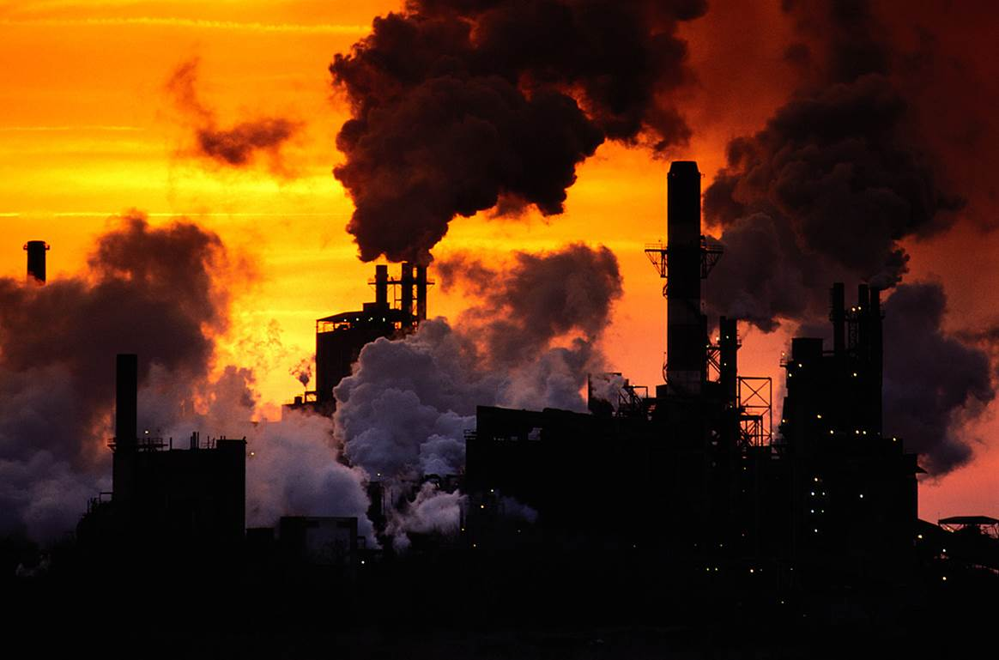

Understanding Global Warming
Global warming is a pressing environmental issue that affects our planet and future generations. It refers to the long-term increase in Earth's average surface temperature due to human activities, primarily the emission of greenhouse gases.
Scientific evidence shows that human activities, such as burning fossil fuels, deforestation, and industrial processes, have significantly contributed to the rise in greenhouse gas concentrations in the atmosphere. These gases trap heat from the sun, causing the Earth's temperature to increase, leading to various environmental consequences.
Effects of Global Warming
Global warming has far-reaching effects on our planet. It contributes to the melting of polar ice caps, leading to rising sea levels and coastal flooding. It also disrupts weather patterns, resulting in more frequent and intense heatwaves, droughts, and hurricanes.
Furthermore, global warming impacts ecosystems, causing habitat loss and endangering numerous plant and animal species. It affects agriculture and food production, as changing climate conditions can reduce crop yields and disrupt food supplies.
Addressing Global Warming
Tackling global warming requires collective action and individual efforts. Governments, industries, and individuals can take steps to reduce greenhouse gas emissions and mitigate the impacts of climate change.
Some key strategies include transitioning to renewable energy sources, improving energy efficiency, promoting sustainable transportation, implementing reforestation projects, and adopting eco-friendly practices in daily life.
By raising awareness, supporting sustainable initiatives, and making conscious choices, we can work towards a sustainable future and mitigate the effects of global warming.